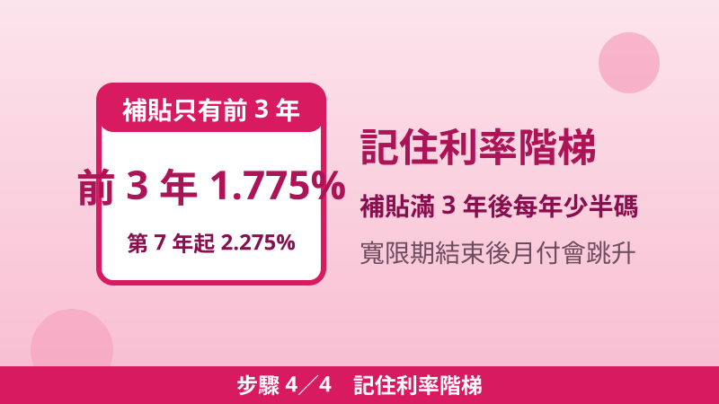

青安貸款 3.0 申請教學：最高 1,500 萬、前 3 年利率 1.775%，4 步驟一次看懂
青年安心成家購屋優惠貸款（青安貸款）進入 3.0 版本：2026 年 7 月 16 日經行政院通過，自 2026 年 8 月 1 日起實施，申辦期間至 2029 年 7 月 31 日止。這次改版有兩個方向：一是把優惠更集中給真正首購自住的年輕人，新增年齡、所得、房屋總價三個門檻；二是加碼支持婚育家庭，育兒家庭最高可貸 1,500 萬元。財政部統計，青安貸款開辦以來已協助逾 51 萬戶無自有住宅家庭購屋。
3.0 跟 2.0 差在哪？一張表對照
| 項目 | 青安 2.0（至 2026/7/31） | 青安 3.0（2026/8/1 起） |
|---|---|---|
| 申辦期間 | 至 2026 年 7 月 31 日 | 2026/8/1 ～ 2029/7/31 |
| 年齡限制 | 無 | 申貸時未滿 50 歲，且申貸年齡＋核貸年限合計不超過 80 |
| 所得限制 | 無 | 借款人本人年所得總額不超過 200 萬元 |
| 房屋總價上限 | 無 | 臺北市 3,500 萬、新北市及新竹縣（市）2,500 萬、其他縣（市）2,000 萬 |
| 最高貸款額度 | 最高 1,000 萬元 | 一般 1,000 萬、新婚 1,200 萬、育兒家庭 1,500 萬 |
| 計息方式 | 一段式／二段式／混合式 | 新申請案件僅適用一段式機動利率 |
| 成數／年限／寬限期 | 最高 8 成、最長 40 年、寬限期 5 年 | 不變：最高 8 成、最長 40 年（含寬限期 5 年） |
簡單說：成數、年限、寬限期與前 3 年 1.775% 的利率優惠都延續，變的是「誰能貸」和「能貸多少」。
誰可以申請？先過 4 道關卡
- 無自有住宅：借款人本人、配偶及未成年子女名下均無自有住宅，買房目的是自住。
- 年齡：申貸時未滿 50 歲，且「申貸年齡＋核貸年限」合計不得超過 80。
- 所得：借款人本人年所得總額不超過新臺幣 200 萬元。
- 房價：購買住宅的鑑價或買賣總價，臺北市不超過 3,500 萬元、新北市及新竹縣（市）不超過 2,500 萬元、其他縣（市）不超過 2,000 萬元。
- 限貸一次：青安貸款每人限貸一次，財政部會持續跨部會勾稽查核，不符自住用途會追回已補貼的利息。
可以貸多少？看你的家庭狀況
| 申請身分 | 資格說明 | 最高額度 |
|---|---|---|
| 一般申請人 | 符合上述資格條件 | 1,000 萬元 |
| 新婚家庭 | 申請日前 2 年內完成結婚登記 | 1,200 萬元 |
| 育兒家庭 | 育有未成年子女 | 1,500 萬元 |
貸款成數最高 8 成：買 1,000 萬的房子最多貸 800 萬，自備款至少 200 萬；額度上限與成數上限要同時符合，取較低的那個。新婚、育兒的認定以申請日為準，懷孕中是否適用請向承辦銀行確認。
利率怎麼算？前 3 年 1.775%，之後逐年回升
青安 3.0 只剩一段式機動利率：以中華郵政 2 年期定期儲金（額度未達 500 萬元）機動利率為基準利率，自 2024 年 3 月 27 日起為 1.72%，加碼 0.555% 後原貸款利率為 2.275%。政府補貼 1.5 碼、公股銀行減收半碼，合計優惠 2 碼，撥貸日起 3 年內利率 1.775%；滿 3 年後每年優惠減少半碼，逐步回復原利率：
| 撥貸後期間 | 利率（基準利率 1.72% 時） |
|---|---|
| 第 1～3 年（補貼期內） | 1.775% |
| 期滿後第 1 年 | 1.9% |
| 期滿後第 2 年 | 2.025% |
| 期滿後第 3 年 | 2.15% |
| 期滿後第 4 年起 | 2.275%（回復原貸款利率） |
每月要繳多少？3 種額度試算
以下以本息平均攤還、貸款 40 年、利率 1.775% 不變概算：
| 貸款金額 | 40 年本息攤還月付 | 寬限期內月付（只繳利息） |
|---|---|---|
| 1,000 萬元（一般） | 約 29,112 元 | 約 14,792 元 |
| 1,200 萬元（新婚） | 約 34,934 元 | 約 17,750 元 |
| 1,500 萬元（育兒） | 約 43,668 元 | 約 22,188 元 |
寬限期最多 5 年、期間只繳利息不還本金，但寬限期是含在 40 年年限裡面，不是外加 5 年。以 1,000 萬為例：用滿 5 年寬限期後，剩下 35 年要把本金攤完，若以第 6 年利率 2.15% 計算，月付會跳到約 33,901 元——比寬限期每月 14,792 元多出約 19,100 元。用寬限期之前，先確認第 6 年的月付收入撐不撐得住。
申請 4 步驟
步驟 1先算資格
先對 4 關：未滿 50 歲、本人年所得不超過 200 萬元、名下無自有住宅、房價不超過縣市上限；年齡加核貸年限合計不得超過 80。
步驟 2挑對額度
一般最高 1,000 萬；申請日前 2 年內結婚的新婚家庭 1,200 萬；育有未成年子女的家庭 1,500 萬。成數最高 8 成，實際核貸看銀行鑑價與你的收入、信用。
步驟 3備妥文件送件
8 家公股銀行任一家都可辦：臺銀、土銀、合庫、一銀、華南、彰銀、兆豐、臺企銀。備妥身分證明、所得證明、買賣契約書等文件；新申請案件只適用一段式機動利率。

步驟 4記住利率階梯
前 3 年 1.775% 是補貼價，滿 3 年後每年少半碼，第 7 年起回到 2.275%。寬限期結束後月付會跳升，撥款前先把第 6 年的月付算進家庭預算。
3 個容易踩的坑
- 買了才發現超標：房價上限看「鑑價或買賣總價」，臺北市 3,500 萬、新北市及新竹縣（市）2,500 萬、其他縣市 2,000 萬，簽約前先確認總價在上限內。
- 貸後出租或當人頭：青安貸款只給自住，財政部會跨部會勾稽查核；出租、營業使用或人頭申貸被查到，會停止利息補貼、追回已補貼的利息。
- 只看前 3 年利率：1.775% 只有 3 年，第 4 年起每年調升，寬限期結束月付還會再跳一級。試算時要用第 7 年 2.275% 的月付來衡量長期負擔，不要只看前 3 年的輕鬆月付。
另外，青安貸款可搭配內政部的自購住宅貸款利息補貼一起申請，兩邊資格與受理期間不同，申請前請到內政部住宅補貼專區確認當年度公告。
還在租屋、想先看租金補助？可參考116 年度 300 億租金補貼與115 年度租金補貼申請教學；買房後別忘了房屋稅自住優惠稅率，自住稅率比非自住便宜不少。
📎 資料來源
- 財政部新聞稿（115.7.16）「財政部青安貸款 3.0，加碼支持婚育家庭，持續協助民眾購屋安居」：ey.gov.tw
- 財政部國庫署「公股銀行辦理青年安心成家購屋優惠貸款原則」（貸款原則 青安 3.0，更新 115-07-28）：nta.gov.tw
- 財政部國庫署「青安 3.0 方案重點一次看」（發布 115-07-17）：nta.gov.tw
- 財政部國庫署「公股銀行辦理青年安心成家購屋優惠貸款聯絡窗口」（8 家承辦銀行）：nta.gov.tw
最後查證日期：2026-11-23
免責聲明：本文僅供參考，貸款資格、額度與利率以財政部國庫署及承辦銀行最新公告為準，月付試算為利率不變的概算，實際核貸結果以銀行審核為準；申請前請至官方網站或洽承辦銀行確認。